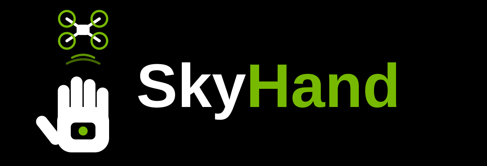
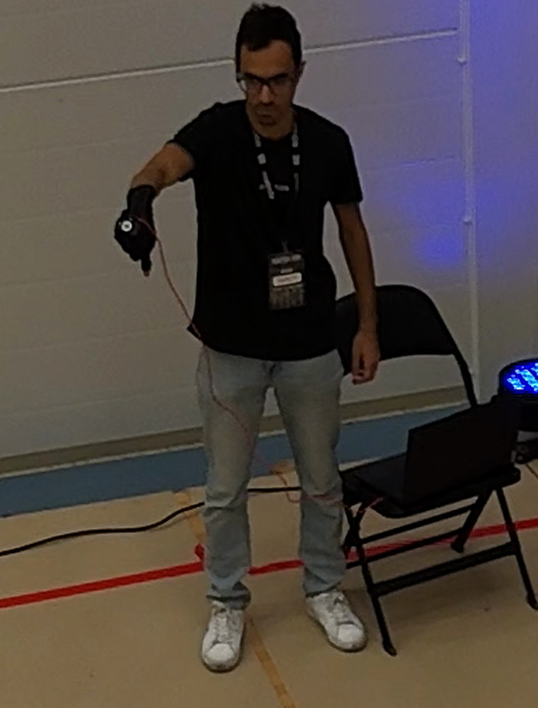
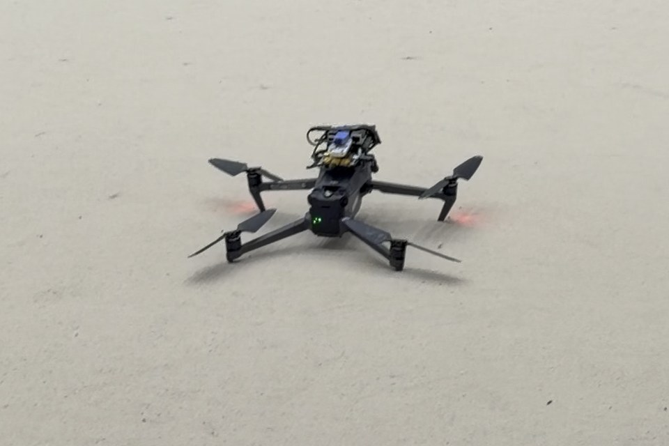
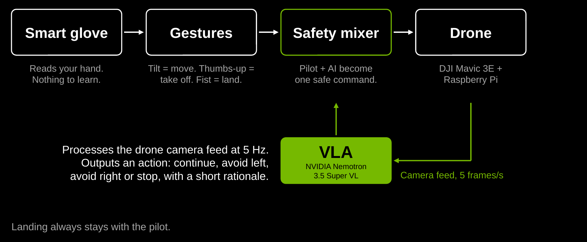
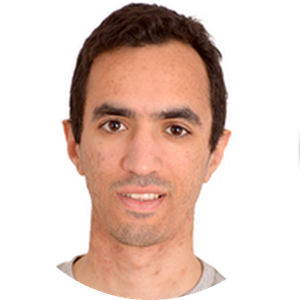
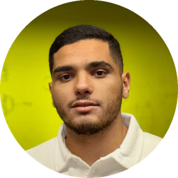

Reliable robot teleoperation, made safe by a vision-language-action model.
The operator gives the intent with a smart glove. NVIDIA Nemotron 3.5 Super VL keeps the drone safe.
View the code on GitHubNo joysticks. Pure intuition


How it works

The glove streams the hand pose and a gesture model turns it into commands. Nemotron 3.5 Super VL processes the camera feed at 5 Hz and outputs continue, avoid left, avoid right or stop. The safety mixer merges both. Landing always stays with the operator.
Why a VLA and not just a distance sensor
Safety
Stops or steers before contact, even when the operator keeps pushing.Banner blocks center, pass on right
Adapts
Banner, table, curtain, person. No retraining for new obstacles.Curtain is far ahead, path is clear
Reads people
Tells a person from a poster, and near from far.A real person is directly ahead in the path
Quotes are real model outputs from our flights.
Results
1 · Flying a square
Hand gestures only. The VLA has nothing to do.
2 · Static obstacle
The operator pushes forward. The VLA sees the banner, takes over and slides right.
3 · Person in the way
The drone stops, backs off and moves aside. The operator lands.
The human gives the intent. The model makes it safe.
Team

Hakim
Hamza